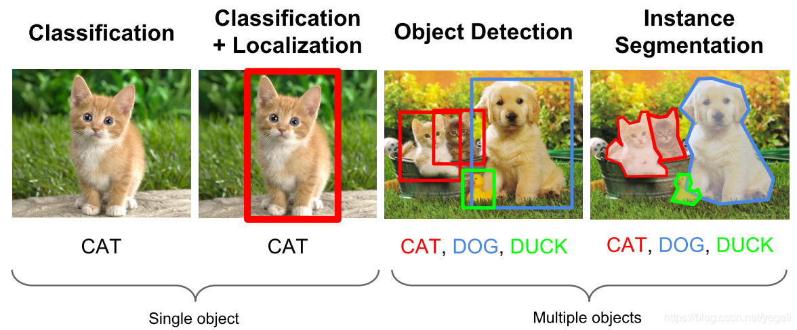
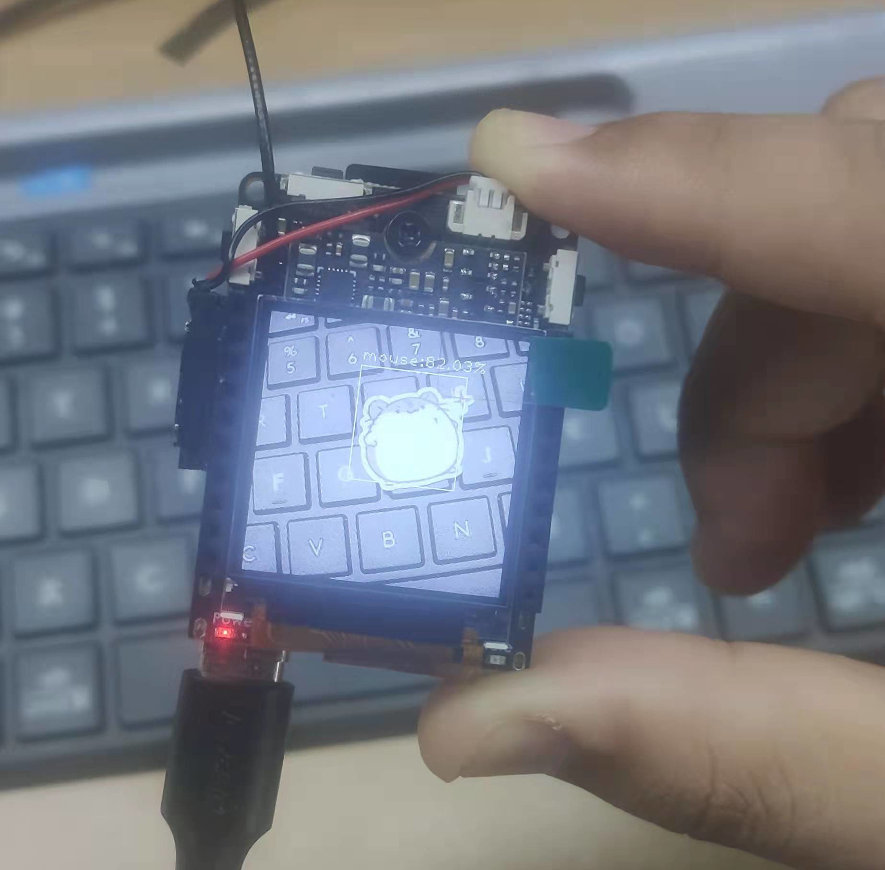

目标检测本地训练教程
| 时间 | 负责人 | 更新内容 | 备注 |
|---|---|---|---|
| 2022年1月22日 | dianjixz | 编写初稿文档 | 训练教程只能在 Linux 系统中运行， 并只能部署到 MaixII-Dock 开发板上运行， 文档还需要二次整理 |
Windows 系统暂不支持！
临时工程文件获取：https://github.com/dianjixz/v831_yolo
基本概念
目标检测（Object Detection）的任务是找出图像中所有感兴趣的目标（物体），确定它们的类别和位置，是计算机视觉领域的核心问题之一。由于各类物体有不同的外观、形状和姿态，加上成像时光照、遮挡等因素的干扰，目标检测一直是计算机视觉领域最具有挑战性的问题。
计算机视觉中关于图像识别有四大类任务：
（1）分类-Classification：解决“是什么？”的问题，即给定一张图片或一段视频判断里面包含什么类别的目标。
（2）定位-Location：解决“在哪里？”的问题，即定位出这个目标的的位置。
（3）检测-Detection：解决“在哪里？是什么？”的问题，即定位出这个目标的位置并且知道目标物是什么。
（4）分割-Segmentation：分为实例的分割（Instance-level）和场景分割（Scene-level），解决“每一个像素属于哪个目标物或场景”的问题。

了解更多可以查看 CSDN 博文：https://blog.csdn.net/yegeli/article/details/109861867
模型训练
| 网络结构 | 训练平台 | 部署平台 | 模型转换工具 |
|---|---|---|---|
| YOLOv2 | PyTorch | MaixII-Dock | ncnn + MaixHub 在线转换工具 |
数据集制作与使用
YOLOv2 默认使用 voc 格式的数据集,文件夹取名为 custom 放到 data 目录下, 比如:
#voc格式的yolo训练数据集
├── custom #数据集文件夹名
│ ├── Annotations #标注文件
│ ├── ImageSets #训练参数划分
│ │ └── Main
│ │ ├── train.txt
│ │ └── val.txt
│ ├── JPEGImages #训练图片
train.txt 和 val.txt 中, 每一行是一个数据(图像)名, 路径相对于 JPEGImages
train.txt 写着用于训练的图片名称
val.txt 写着用于验证的图片名称
修改配置
修改 data/custom.py 中的 CUSTOM_CLASSES 变量为正确的 labels
CUSTOM_CLASSES = [
"mouse",
"sipeed_logo"
]
训练开始
python3 train.py -d custom --cuda -v slim_yolo_v2 -hr -ms
训练完成后会在 weights/custom/slim_yolo_v2 目录下生成训练中保存的参数
导出模型
python3 test.py -d custom -v slim_yolo_v2 --trained_model weights/custom/slim_yolo_v2/slim_yolo_v2_1000.pth --visual_threshold 0.3 -size 224 --export
运行导出模型命令后会在 out 目录下生成 test 测试图片效果和模型文件,模型转换请参考上面模型转换章节.
模型部署
等待模型转换完成,下载转换好的模型文件.
得到的 .param 和 .bin 文件就是部署在 MaixII-Dock 上的文件.
打开事例代码,替换模型文件名,分类标签和模型加载参数,然后运行即可.
#检测示例代码
from maix import nn, camera, image, display
from maix.nn import decoder
import time
model = {
"param": "/root/yolov2_int8.param",
"bin": "/root/yolov2_int8.bin"
}
options = {
"model_type": "awnn",
"inputs": {
"input0": (224, 224, 3)
},
"outputs": {
"output0": (7, 7, (1+4+2)*5) #输出参数修改,修改格式 (7 ,7 , (1 + 4 + "类别数量" ) * 5)
},
"mean": [127.5, 127.5, 127.5],
"norm": [0.0078125, 0.0078125, 0.0078125],
}
labels = ["mouse","sipeed_logo"] #分类标签
anchors = [1.19, 1.98, 2.79, 4.59, 4.53, 8.92, 8.06, 5.29, 10.32, 10.65]
m = nn.load(model, opt=options)
yolo2_decoder = decoder.Yolo2(len(labels), anchors, net_in_size=(options["inputs"]["input0"][0], options["inputs"]["input0"][1]), net_out_size=(7, 7))
while True:
img = camera.capture()
AI_img = img.copy().resize(224, 224)
out = m.forward(AI_img.tobytes(), quantize=True, layout="hwc")
boxes, probs = yolo2_decoder.run(out, nms=0.3, threshold=0.3, img_size=(options["inputs"]["input0"][0], options["inputs"]["input0"][1]))
if len(boxes):
for i, box in enumerate(boxes):
class_id = probs[i][0]
prob = probs[i][1][class_id]
disp_str = "{}:{:.2f}%".format(labels[class_id], prob*100)
img.draw_rectangle(box[0], box[1], box[0] + box[2], box[1] + box[3], color = (255, 255, 255))
x = box[0]
y = box[1] - 20
if y < 0:
y = 0
img.draw_string(x, y, disp_str, color = (255, 255, 255))
display.show(img)
运行效果图:

参考：
csdn 博客：https://blog.csdn.net/yegeli/article/details/109861867